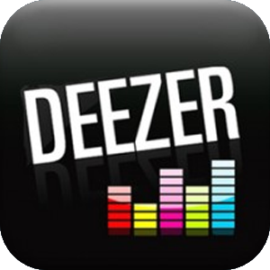

Gönüller sûltanı Hz. Mevlânâ Celâleddîn-i Rûmî’nin eşsiz eseri Mesnevî-i Ma’nevî’nin ilk beytinden ilhamla Bişnev olarak adlandırdığım bu albüm, Hz. Pîr’in his ve tefekkür dünyasının ruhumda uyandırdığı yansımalardır. Albümün hazırlanması için 2015 yılından bu yana stüdyoda yürüttüğüm hummalı çalışmalarla, gönlümdeki sesleri ney’ime söyletmeye gayret gösterdim. Bu albümü Hz. Mevlânâ Celâleddîn-i Rûmî hazretlerine ve daima ilminden, nefesinden ve nazarından müstefid olduğum manevi büyüğüm Mahmud Nedim Aysoy Efendi’me ithaf ediyorum.
Albümdeki eserlerin çoğu Mevlevî edep ve erkânında kullanılan terimlerle isimlendirilmiş, her bir ismin sîreti can bulduğu isimde yankılanmıştır. İlk 18 beyitte de ifade edildiği gibi “Âteş-i aşkest k’ender ney fütâd / Cûşiş-i aşkest k’ender mey fütâd” Neydeki âteş de meydeki kabarış da elbette aşktandır. Bişnev’deki nâr u nidâ, Hak âşıklarının gönlünde bir çerağ uyandırabilirse ne mutlu… Gayret bizden, tevfik Allah’tan.

Tüm diğital müzik marketlerde
"Bişnev"yolculuğundaki sanatseverlere
Mahmud Nedim Aysoy Efendiyle yapılan röportajı tavsiye ediyoruz.